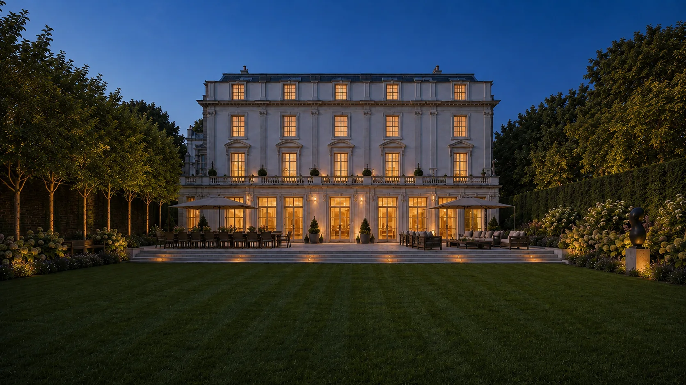
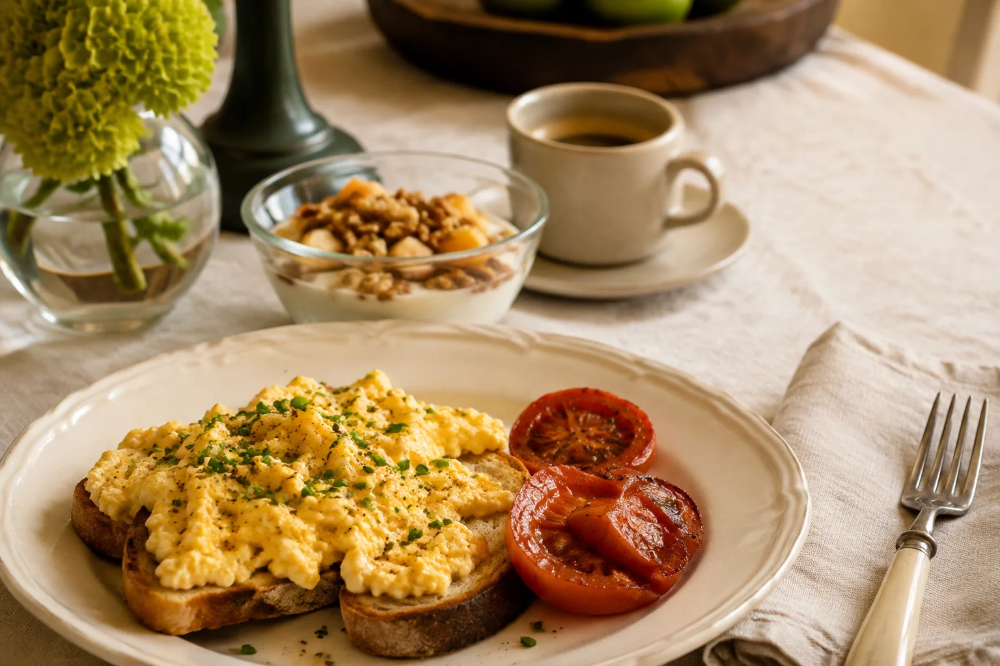
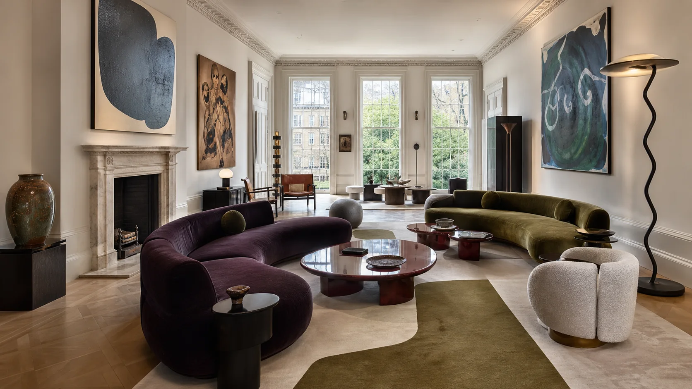
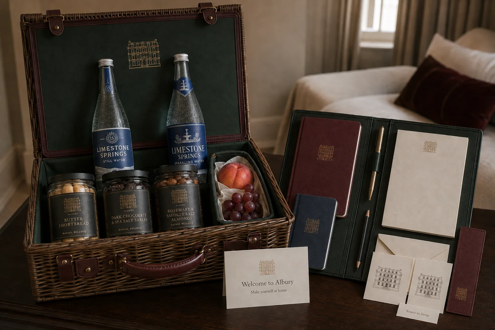

From Kentucky to Albury
The stories behind the water, sodas and bourbon served here.
Limestone Springs → · Hatfield →Make yourself at home.

The house is yours to explore

Today’s menu, the weekly table and something between meals.

Find a house serve, a familiar classic or your usual coffee.

Rooms, maps and the details that make the house.

Guest provisions, thoughtful gifts and the household team.
Loading the story weather…
The stories behind the water, sodas and bourbon served here.
Limestone Springs → · Hatfield →Quiet moments in the kitchen, pantry and laundry.
Behind the service →